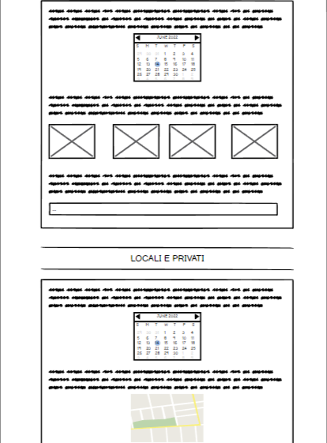
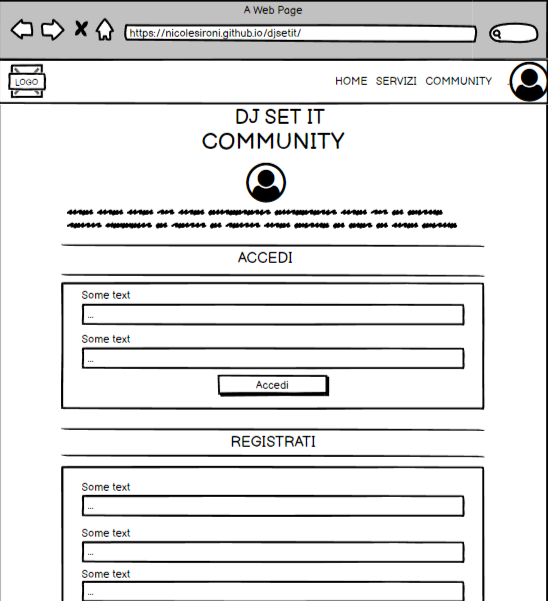

1. Obiettivi
DJ SET IT si prefigge diversi scopi. In primis, mettere in contatto diverse professionalità che molto frequentemente si trovano a lavorare nello stesso ambiente – nello specifico dj, fotografi e proprietari di locali; inoltre è capace di fornire aiuto a questi ultimi nel miglioramento delle proprie prestazioni grazie al confronto con gli altri utenti, ricevendo ispirazione e consigli; per finire, può essere utile per ampliare la loro notorietà in un panorama locale e nazionale.
2. Target utente
Primariamente individui dai 15 ai 30 anni, di genere misto.
3. Competitors
Non ho trovato nessun sito web che trattasse specificamente dello stesso argomento; il confronto è stato fatto con communities simili, ma dedicate unicamente ad una delle professioni da me coinvolte (dj, fotografi e locali).
Il primo competitor, http://www.webdeejay.it/, a mio avviso, riporta uno stile di impaginazione e una grafica non molto chiara, con troppi elementi ravvicinati, apparendo, dunque, abbastanza caotico; inoltre, alcune pagine cliccabili non contengono alcun contenuto. A differenza della community “DJ SET IT” presenta anche la possibilità di fornire tutorials e consigli su come utilizzare le strumentazioni da dj.
Il secondo competitor, https://www.fotocommunity.it/, appare strutturalmente meglio organizzato rispetto al precedente, così come a livello grafico risulta più accattivante. Essendo una community dedicata unicamente alla fotografia presenta qualche funzionalità in più rispetto a “DJSET IT”, ma il principio di base è il medesimo: condivisione di foto, conoscenza di altri utenti, incentivo per la propria popolarit.
1. Architettura del sito

Fig.1 - Architettura del sito
La Fig.1 rappresenta graficamente l'architettura del sito: il rettangolo blu indica la home page; i rettangoli viola mostrano le pagine secondarie; i rettangoli azzurri specificano le sottocategorie in cui le pagine viola si suddividono; infine, nel footer, troviamo anche il riferimento ad una pagina esterna (instagram, sfondo grigio).
2. Wireframe

Fig.2 - Homepage



Fig.3,4,5 - Servizi


Fig. 6,7 - Community
1. Linguaggi
- HTML
- CSS
- Javascript (importato solo in alcuni elementi)
- W33.CSS (solo nello slider di immagini)
1. Strumenti
- Sublime Text: per editare i codici
- Google Fonts: per la scelta dei font e per le icone
- Adobe Color: per la scelta dei colori
- Font Awesome: per le icone
- W3 school: per trovare i codici degli elementi da inserire
- Github.com: per la pubblicazione del sito
- Canva: per la realizzazione del logo/titoli e della mappa per l’architettura del sito
- Remove.bg: per la rimozione dello sfondo dall’immagine del logo/titoli
- Balsamiq Wireframe: per la realizzazione dei wireframes del sito
- Instagram e Whatsapp: per la promozione del sito